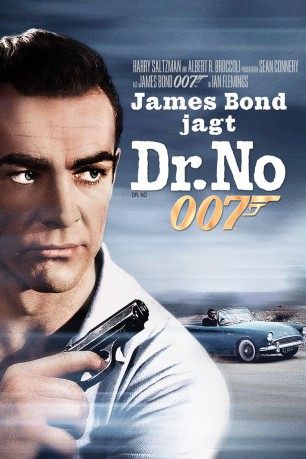
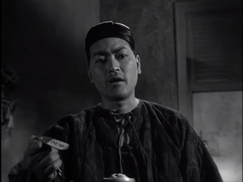

#255 James Bond 01 - Sean Connery - Jagt Dr. No
Alternativ: Dr. No
Auszeichnungen: 1 GoldenGlobes gewonnen
 
 IMDB-Wertung: 7.3 / 10
IMDB-Wertung: 7.3 / 10  Metascore: 78
Metascore: 78 
Der mysteriöse Wissenschaftler Dr. No sabotiert von seiner geheimen Basis auf Jamaica aus das amerikanische Raumfahrtprogramm. Der Secret Service setzt seinen besten Agenten auf den Wissenschaftler an.
Jahr: 1962
Dauer: 110 Minuten
FSK: 12
Land: England Studio: United ArtistsTonspuren: DTS - ,
Untertitel: Deutsch, Englisch,
Auflösung: 1080p (1920×1080) Größe: 15360 MB
Genre: Action, Abenteuer, Thriller
Regisseur: Terence Young
Drehbuch: Richard Maibaum, Johanna Harwood, Berkely Mather, Ian Fleming, Wolf Mankowitz
Soundtrack: Monty Norman, John Barry
Darsteller:
 Sean Connery als James Bond
Sean Connery als James Bond Ursula Andress als Honey Ryder
Ursula Andress als Honey Ryder- Joseph Wiseman als Dr. No
- Jack Lord als Felix Leiter
 Bernard Lee als M.
Bernard Lee als M. Anthony Dawson als Professor Dent
Anthony Dawson als Professor Dent- Zena Marshall als Miss Taro
- Eunice Gayson als Sylvia
 Lois Maxwell als Miss Moneypenny
Lois Maxwell als Miss Moneypenny- Peter Burton als Major Boothroyd
- Rick Lester als Guard , uncredited
 Milton Reid als Dr. No's Guard , uncredited
Milton Reid als Dr. No's Guard , uncredited- John Kitzmiller als Quarrel
- Yvonne Shima als Sister Lily
- Michel Mok als Sister Rose
- Marguerite LeWars als Photographer , as Marguerite Lewars: end credits
- William Foster-Davis als Superintendent
- Dolores Keator als Mary
- Reggie Carter als Jones
- Louis Blaazer als Pleydell-Smith
- Colonel Burton als General Potter
- Keith Binns als Crab Key Guard , uncredited
- Chris Blackwell als Henchman jumping off dock into water , uncredited
- Kes Chin als Dragon Guard , uncredited
-  Anthony Chinn als Decontamination Technician , uncredited
- Eric Coverley als Three Blind Mice Assassin , uncredited
- Charles Edghill als Three Blind Mice, 2nd Beggar , uncredited
- Margaret Ellery als Stewardess , uncredited
- Lancelot Evans als Crab Key Dock Guard , uncredited
- Alan Gold als Croupier at La Cercle , uncredited
 Victor Harrington als Card Player , uncredited
Victor Harrington als Card Player , uncredited- John Hatton als Radio Operator , uncredited
- George Hilsdon als Le Cercle Patron , uncredited
- Bettine Le Beau als Prof. Dent's Secretary , uncredited
- Byron Lee als Singer at Puss Feller's , uncredited
- Henry Lopez als Three Blind Mice Assassin , uncredited
- Louis Marriott als Dragon Guard , uncredited
- Count Prince Miller als Nightclub Dancer , uncredited
- Stanley Morgan als Concierge in Casino , uncredited
- Tim Moxon als Prof. John Strangways , uncredited
- Malou Pantera als Hotel Receptionist , uncredited
- Willie Payne als Johnny , uncredited
- Lester Prendergast als Puss Feller , uncredited
- Carol Reckford als Dent's Boat Captain , uncredited
- Robert Rietty als John Strangways , uncredited
- Adrian Robinson als Hearse Driver , uncredited
- Carey Robinson als Guard with Loudspeaker , uncredited
- Maxwell Shaw als Communications Operator , uncredited
- Bob Simmons als James Bond in Gunbarrel Sequence , uncredited
- Frank Singuineau als Hotel Waiter , uncredited
Datei: X:\7+mehr(A-Z)\007 James Bond\James Bond 01 - Sean Connery - Jagt Dr. No (1962, FSK12, 1920x1080).mkv seit 15.02.2015
Festplatte: HD Collection-7+mehr(A-Z)+Person
 Es gibt insgesamt 28 Filme in der Gruppe '7+mehr(A-Z)\007 James Bond'
Es gibt insgesamt 28 Filme in der Gruppe '7+mehr(A-Z)\007 James Bond'